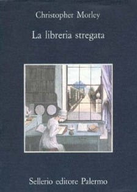
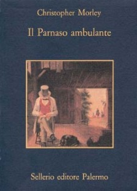
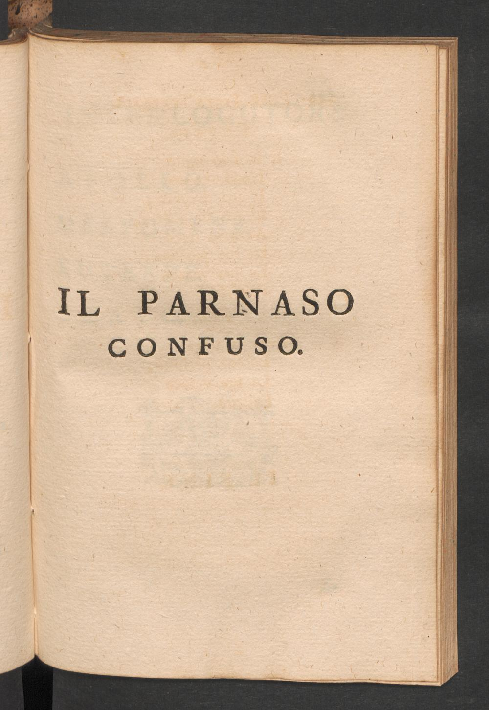
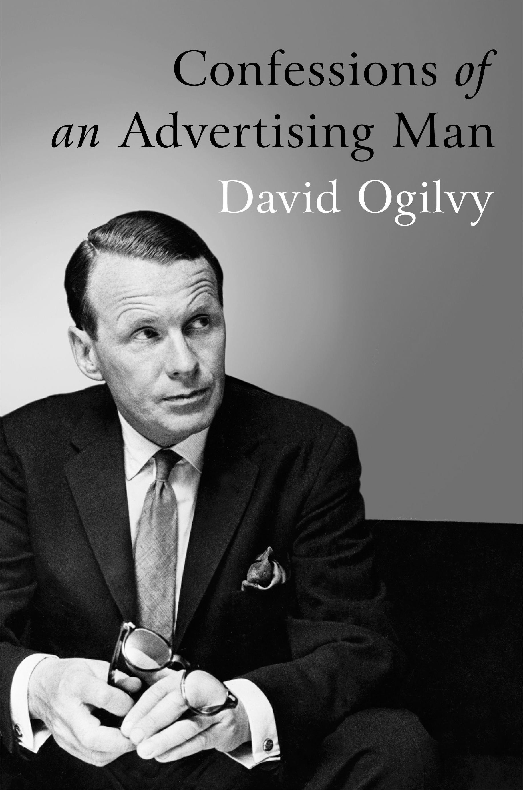
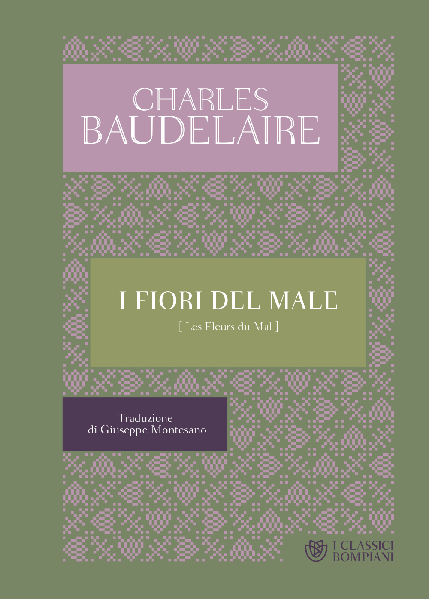
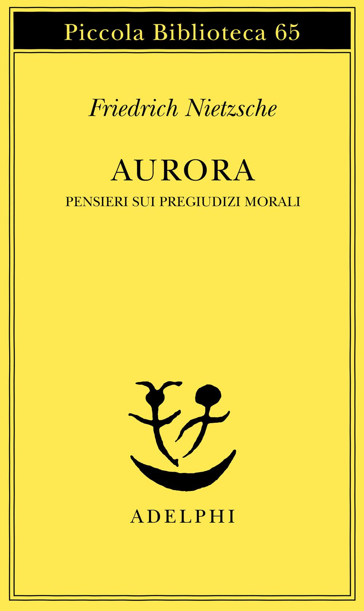
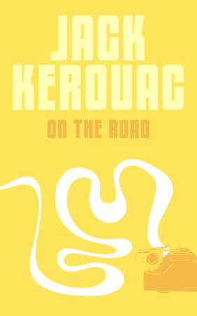

46:43 · 14 OPERE
La Libreria Stregata di Christopher Morley.
Il filo del discorso
Il relatore presenta La libreria stregata di Christopher Morley come un romanzo sulla funzione dei libri nella formazione del giudizio e nella vita quotidiana. Attraverso il libraio Roger Mifflin, discute la scelta dei volumi, il rapporto fra lettore e libraio e la capacità della letteratura di suscitare bisogni ancora inespressi. Il dialogo con il giovane pubblicitario Aubrey Gilbert apre una critica della persuasione commerciale, collegata a Ogilvy, Ellul e a un passo di Conrad citato da Morley. Seguono riflessioni sulla differenza fra cultura vissuta e possesso esibito dei libri, sulle traduzioni e sul rapporto fra classici e successo di mercato. Il confronto con Il Parnaso ambulante porta al viaggio di Helen McGill e a un accostamento con Kerouac. Le digressioni su Baudelaire, Nietzsche e Gödel restano distinte dalla trama: la scheda segnala le identificazioni probabili e corregge la confusione fra indecidibilità formale e terzo valore di verità. I giudizi sul presente, sulla editoria e sulla pubblicità sono attribuiti al relatore e ai personaggi cui dà voce.
I libri nel discorso

La libreria stregata
Copertina: Sellerio · La memoria 264 · 1992
Immagine autentica dell’opera, controllata visivamente; l’edizione di riferimento non è attribuita al filmato.
Christopher Morley e The Haunted Bookshop / La libreria stregata espliciti: opera principale discussa e letta.
Passaggio 0:51 ↗ · Fonti e libro ↗
Il Parnaso ambulante (Parnassus on Wheels)
Copertina: Romanzo originale 1917. Copertina autentica della edizione Sellerio, La memoria 263, 1992, traduzioni di Rosanna Pelà ed Enrico Piceni, ISBN 9788838908507. La scheda editoriale corrente indica 172 pagine; non si attribuisce tale paginazione a tutte le stampe o alla copia del relatore.
Immagine autentica dell’opera, controllata visivamente; l’edizione di riferimento non è attribuita al filmato.
Il Parnaso ambulante e 1917 espliciti; ripreso estesamente nella conclusione con Helen e Andrew McGill.
Passaggio 2:11 ↗ · Fonti e libro ↗
Fiorirà l’aspidistra
Copertina: Santelli · Classici · copertina ufficiale dell’edizione di riferimento
Orwell e Fiorirà l’aspidistra riconoscibili nonostante deformazioni della trascrizione automatica.
Passaggio 2:34 ↗ · Fonti e libro ↗
Il Parnaso confuso
Occhietto del libretto nella raccolta di Metastasio: Prima rappresentazione della composizione: Schönbrunn,24 gennaio1765, per le nozze di GiuseppeII e Maria Giuseppa di Baviera; GluckWV1.34. Immagine: occhietto autentico Il Parnaso confuso nel tomo decimo delle Poesie del signor abate Pietro Metastasio, Torino, Stamperia Reale; raccolta in14tomi1757–1788. ETH-Bibliothek Zürich, Rar6683, DOI10.3931/e-rara-27013, canvas8710993. Non è copertina autonoma, né partitura di Gluck; anno del singolo tomo non dedotto dall’intervallo della raccolta.
Pagina iniziale del testo poetico, non copertina autonoma e non partitura musicale. ETH-Bibliothek Zürich, Rar6683, https://doi.org/10.3931/e-rara-27013 / Public Domain Mark.
Gluck e Il Parnaso confuso espliciti nella digressione musicale; libretto Pietro Metastasio verificato nel catalogo tematico. La immagine mostra il testo poetico nella raccolta, non la partitura.
Passaggio 4:27 ↗ · Fonti e libro ↗
Confessions of an Advertising Man
Copertina: Copertina autentica della edizione Southbank Publishing, ISBN 9781904915379, paperback, 192 pagine, con nuova prefazione di Sir Alan Parker. Il ritratto e il titolo sono quelli della immagine grande fornita dall’editore. Si distingue dalla prima edizione del 1963 e non si attribuisce una particolare edizione al video.
Immagine autentica dell’opera, controllata visivamente; l’edizione di riferimento non è attribuita al filmato.
David Ogilvy e Confessions of an Advertising Man espliciti; prima pubblicazione corretta al 1963.
Passaggio 8:45 ↗ · Fonti e libro ↗
Propagandes
Copertina: Economica · Classiques des sciences sociales · ISBN 9782717818482
Immagine autentica dell’opera, controllata visivamente; l’edizione di riferimento non è attribuita al filmato.
Jacques Ellul e Propagandes espliciti nel collegamento fra persuasione commerciale e propaganda.
Passaggio 11:16 ↗ · Fonti e libro ↗
Divina Commedia
Copertina: Giunti Barbera · Passepartout, 2021 · edizione di riferimento
Divina Commedia esplicita come esempio di classico.
Passaggio 20:24 ↗ · Fonti e libro ↗
Le conseguenze economiche della pace
Copertina: Adelphi · L’oceano delle storie · 2007 · traduzione di Franco Salvatorelli
Immagine autentica dell’opera, controllata visivamente; l’edizione di riferimento non è attribuita al filmato.
Keynes e Le conseguenze economiche della pace espliciti nel discorso sulle conseguenze del 1919.
Passaggio 25:06 ↗ · Fonti e libro ↗
The Decay and Restoration of Civilization
Identificazione probabile
Copertina della raccolta: Prometheus · The Philosophy of Civilization · 1987 · raccolta in inglese
Copertina della raccolta Prometheus del 1987 che contiene The Decay and Restoration of Civilization e Civilization and Ethics. I due saggi, originariamente distinti, restano voci separate. L’edizione in inglese dell’immagine non è attribuita al video.
Schweitzer e crisi della civiltà evocati senza titolo; collegamento probabile al testo del 1923, non lettura certa di una specifica edizione.
Passaggio 26:27 ↗ · Fonti e libro ↗
L’Albatros (L’albatro)
Copertina della raccolta I fiori del male: Poesia pubblicata nella Revue française nel 1859 e inclusa nella seconda edizione delle Fleurs du mal, 1861. Immagine autentica della raccolta I fiori del male, Bompiani, traduzione Giuseppe Montesano, 2022, 640 pagine, ISBN 9788830102774; non copertina autonoma della poesia.
Riutilizzata la immagine canonica della raccolta già presente nel repertorio, senza duplicare il file. La poesia non apparteneva alla prima edizione del 1857.
Baudelaire e L’Albatros espliciti: poesia distinta dalla raccolta I fiori del male di cui si usa la copertina.
Passaggio 33:16 ↗ · Fonti e libro ↗
Aurora. Pensieri sui pregiudizi morali (Morgenröthe)
Identificazione probabile
Copertina: Originale 1881. Copertina autentica Adelphi, Piccola Biblioteca 65, 1978, traduzione Ferruccio Masini, XII–283 pagine, ISBN 9788845903571. Non edizione identificata nel video.
Immagine autentica dell’opera, controllata visivamente; l’edizione di riferimento non è attribuita al filmato.
Nietzsche e immagine del volo visto dal basso; identificazione probabile con Aurora §574, titolo non pronunciato.
Passaggio 33:58 ↗ · Fonti e libro ↗
La società del contrario
Copertina: Zambon · 2005
Copertina autentica dell’edizione di riferimento, controllata visivamente. Non identifica l’esemplare letto o citato nel video.
La società del contrario esplicita, richiamo del relatore al proprio libro.
Passaggio 36:28 ↗ · Fonti e libro ↗
On the Road (Sulla strada)
Copertina: Romanzo originale 1957. Copertina autentica Penguin Modern Classics, paperback, catalogo canadese 31 dicembre 2002, introduzione di Ann Charters, ISBN 9780735254237. La copertina gialla con strada stilizzata appartiene a questa edizione, non a una prima edizione.
Immagine autentica dell’opera, controllata visivamente; l’edizione di riferimento non è attribuita al filmato.
Kerouac e On the Road espliciti nel confronto con il viaggio di Helen McGill.
Passaggio 38:18 ↗ · Fonti e libro ↗
Über formal unentscheidbare Sätze der Principia Mathematica und verwandter Systeme I (Sulle proposizioni formalmente indecidibili dei Principia Mathematica e di sistemi affini I)
Identificazione probabile
Copertina: Immagine della edizione inglese Dover, 1992, viii + 72 pagine, traduzione di B. Meltzer, introduzione di R. B. Braithwaite. Articolo originale: Monatshefte für Mathematik und Physik, 38, 1931, pp. 173–198.
Copertina autentica Dover scura con motivi di punti verdi, nome Kurt Gödel arancio e titolo inglese chiaro. È il volume della traduzione con introduzione, non la copertina del fascicolo originale del 1931 o il diverso Gödel, Escher, Bach. L’ISBN cartaceo e la bibliografia KIT identificano la ristampa 1992; non è assegnata al filmato una precisa edizione mostrata.
Gödel e incompletezza richiamati senza titolo; probabile riferimento al risultato del 1931, con correzione della interpretazione come terzo valore di verità.
Passaggio 42:08 ↗ · Fonti e libro ↗